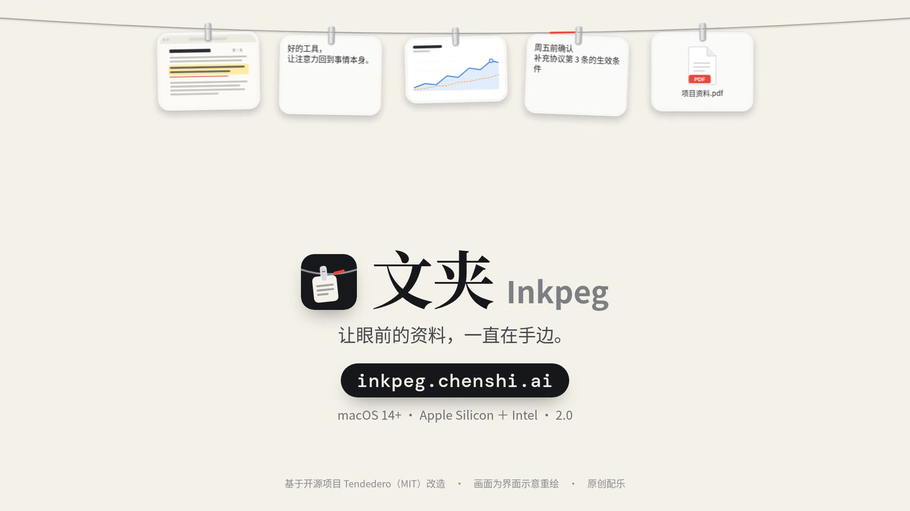

拖进来，就挂上。
图片、文字、PDF、本地普通文件，拖到绳子附近松手；或右键小红段选“粘贴挂入”“挂入文件…”。保存独立副本，原件留在原处。
上限：文字 1 MiB · 图片 16 MiB／3200 万像素 · 普通文件 64 MiB · 每批 32 项／64 MiB。超限会拒绝并提示。
为 macOS 菜单栏而做 · 改造自开源项目 Tendedero
文夹 Inkpeg 在屏幕上方拉一根绳。截图、文字、图片、PDF 和普通文件拖上去就挂住；单击复制，点一下小红段随手记事。资料只存在你的 Mac 里。
先看一遍 · 52 秒
从“截图又找不到”说起：挂入、复制、记事、满绳浏览、拖出副本，再到资料只留在本机。

01 · 试一试
试试这些操作：拖到绳子附近松手挂入、单击复制、点小红段记事、右键看更多。
02 · 为什么需要一根绳
一下午截了十几张，文件名全是时间。要用的那一张，又得一个个点开找。
复制第二段，第一段就没了。只好在几个窗口之间复制、切换、粘贴，再复制。
文件夹、聊天记录、浏览器标签……眼前这一段工作要用的几份材料，散在不同地方。
眼前要用的材料挂成一排：单击复制，拖出副本，原件留在原处。用完取下，资料库里的副本仍保留。
03 · 能做什么
每一项都对应 App 里的真实交互。标注“开发预览”的功能已随 2.0 公开预览包提供；真实跨应用与平台验收边界见本版限制。
图片、文字、PDF、本地普通文件，拖到绳子附近松手；或右键小红段选“粘贴挂入”“挂入文件…”。保存独立副本，原件留在原处。
上限：文字 1 MiB · 图片 16 MiB／3200 万像素 · 普通文件 64 MiB · 每批 32 项／64 MiB。超限会拒绝并提示。
普通材料单击即复制，到目标应用 ⌘V。记事卡单击则继续编辑。
新建或恢复记事，支持 ⌘V 粘贴；边写边存本地草稿，首行作卡片标题，⌘↩ 挂上去。Esc、关闭或失焦收起并保留草稿。
查看来源和详情、复制并附来源、打开或标注副本、在 Finder 中显示、取下卡片。来源可补录，不会凭空生成出处。
满绳后保留全部卡片：触控板左右滚动、Shift＋滚轮或底部左右箭头；新卡片会进入可见范围，不会因屏幕变窄被自动取下。
文字带着换行，图片提供 PNG／TIFF 与独立副本，文件提供可读取副本，并保留 Finder 文件拖放。微信／Codex 的实际接收尚待验收，可用“复制 → ⌘V”。
新工作区默认手动挂入。可在设置中选择剪贴板自动接收的类型，或监听截图目录；自己复制出去的和重复内容不会再建卡。
鼠标靠近屏幕顶部展开，⌃⌥T 显示或隐藏。默认没有 Dock 图标，入口是菜单栏的回形针。
04 · 资料留在本机
~/Library/Application Support/Inkpeg/：材料与版本、导出临时副本、草稿、恢复事务、清理记录和设置状态。如实说明：工程没有应用联网功能，但完整的运行时网络观察尚未完成，源码检查不等于完整隐私认证。已提供一键隐私开关；自定义资料库位置尚未实现。
~/Library/Application Support/Inkpeg/
Materials/材料及版本Exports/复制文件、外部打开生成的临时导出Drafts/ Transactions/草稿及编辑恢复记录CleanupRecords/清理前清单、状态和废纸篓结果state.json state.previous.json当前与备用状态及设置点“预览清理…”查看清理项目
05 · 下载
11ba28d7f45804838c4fd7b2ac811363c418ec209589187f9f567c66a6c8a34f安装完成后，鼠标移到屏幕顶部，或按 Control＋Option＋T 开始使用。
保持 DMG 打开，复制命令到终端并按回车，会自动安装并打开。
/bin/bash "/Volumes/文夹 Inkpeg 2.0.0 build 5/安装文夹.command"若提示“可能是恶意软件，已阻止粘贴”，先核对“查看安装命令”：它只运行已打开 DMG 里的本地安装助手。确认来源是本站后，点“仍然粘贴”。若提示“检测到恶意软件”或“已阻止恶意脚本”，停止操作。
升级前先从文夹菜单退出旧版。安装助手保留旧 App，资料库保持不变。
不是。文夹主要放眼前正在用的材料。事项／历史列表和双栏对照尚未实现。取下卡片会保留副本，清理前请逐项核对名称。
开发预览提供纯文字、PNG／TIFF 和可读取文件副本，并保留 Finder 文件拖放。具体输入框的实际接收仍待验收；不接收时可用“复制 → 目标应用 ⌘V”。网页上的桌面只用于体验操作方式，不会调用你电脑里的应用。
PDF、视频等按普通文件托管，接收的是独立副本，并不代表支持预览或理解所有格式。
Inkpeg 仓库目前是私有的，只有获授权的 GitHub 账号能访问。安装包直接由本站提供，不需要通过 GitHub 下载。
安装包按 Apple Silicon（M 系列）与 Intel（x86_64）通用版构建，最低 macOS 14。编译支持不等于所有机器都已验收：2.0.0 本机验收环境为 Apple Silicon／macOS 26.6.2；Intel 实机、较旧系统和新机首次安装仍待测试。
清理是移入系统废纸篓，应用不会自动清空。真正释放空间需要你自行清空废纸篓；清理记录本身会保留，清理很小的文件后总占用可能短暂增加。